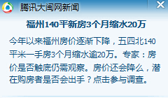

Conversation with 81184027 at Sun 10 Aug 2014 09:54:47 AM CST on 154115835 (webqq)
(08/10/2014 12:10:27 AM) 田慧慧-金华: 强调中庸，求同存异。可是社会发展到高级阶段还是需要集体的，团队精神也是国内外大企业集团都强调的。集体和个人之间需要个平衡点。
(08/10/2014 12:11:42 AM) 2478375537: 要
(08/10/2014 12:11:51 AM) 2478375537: 和平
(08/10/2014 12:11:57 AM) 2478375537: 先
(08/10/2014 12:12:01 AM) 2478375537: 休息
(08/10/2014 12:12:17 AM) 田慧慧-金华: 社会学认为世界经济高度一体化和共产主义是人类文明发展的规律导致的大势所趋。
(08/10/2014 02:25:03 AM) 紫罗兰: :face3:
(08/10/2014 02:25:13 AM) 紫罗兰: 我睡醒了
(08/10/2014 02:25:50 AM) 紫罗兰: 在农村很奇怪，晚上9那样大家都睡觉了
(08/10/2014 05:35:26 AM) 福建-福州&水浒: 早:coffee::coffee:
(08/10/2014 08:14:41 AM) 小绵羊: 埃博拉病毒是什么?这么令世卫组织担忧!
(08/10/2014 08:55:49 AM) 田慧慧-金华: 和登革热一样，瘟疫，无药可医。浙江义乌前几年也爆发过登革热，来工业区看货的老外带来的。政府很重视到处灭蚊。这个主要蚊子传播病毒，又是夏天。但是小道消息说也死了好多人。
(08/10/2014 08:56:13 AM) 心理师仲老师: 女人性自慰在自然人群中的比例大概是７０－８０％，我做心理治疗与咨询这么多年，就没有遇到过一例女性担心性自慰会导致肾虚，或者担心影响将来的性功能及生育能力。很多男性，往往会认为手淫有害，导致肾虚，或者影响将来的性功能及生育能力。为什么会这样呢？男权社会，男人有更多的“阉割焦虑”吧。
(08/10/2014 08:58:05 AM) 田慧慧-金华: 那时我也在一工业区工作，距离爆发登革热的工业区不远。气氛很紧张了。被蚊子也咬得浑身是包，运气吧，没有被携带病毒的蚊子咬到。
(08/10/2014 09:01:05 AM) 田慧慧-金华: 请问会在公交车上骚扰女性的男人难道也有阉割焦虑啊。我那次就是被拥挤的车里摸了一把，就厌倦市区写字楼的工作换到能提供住宿不挤公交的工业区工作了，谁知道遇上登革热在那乡下爆发。
(08/10/2014 12:10:27 AM) 田慧慧-金华: 强调中庸，求同存异。可是社会发展到高级阶段还是需要集体的，团队精神也是国内外大企业集团都强调的。集体和个人之间需要个平衡点。
(08/10/2014 12:11:42 AM) 魂: 要
(08/10/2014 12:11:51 AM) 魂: 和平
(08/10/2014 12:11:57 AM) 魂: 先
(08/10/2014 12:12:01 AM) 魂: 休息
(08/10/2014 12:12:17 AM) 田慧慧-金华: 社会学认为世界经济高度一体化和共产主义是人类文明发展的规律导致的大势所趋。
(08/10/2014 02:25:03 AM) 紫罗兰: :face3:
(08/10/2014 02:25:13 AM) 紫罗兰: 我睡醒了
(08/10/2014 02:25:50 AM) 紫罗兰: 在农村很奇怪，晚上9那样大家都睡觉了
(08/10/2014 05:35:26 AM) 福建-福州&水浒: 早:coffee::coffee:
(08/10/2014 08:14:41 AM) 小绵羊: 埃博拉病毒是什么?这么令世卫组织担忧!
(08/10/2014 08:55:49 AM) 田慧慧-金华: 和登革热一样，瘟疫，无药可医。浙江义乌前几年也爆发过登革热，来工业区看货的老外带来的。政府很重视到处灭蚊。这个主要蚊子传播病毒，又是夏天。但是小道消息说也死了好多人。
(08/10/2014 08:56:13 AM) 心理师仲老师: 女人性自慰在自然人群中的比例大概是７０－８０％，我做心理治疗与咨询这么多年，就没有遇到过一例女性担心性自慰会导致肾虚，或者担心影响将来的性功能及生育能力。很多男性，往往会认为手淫有害，导致肾虚，或者影响将来的性功能及生育能力。为什么会这样呢？男权社会，男人有更多的“阉割焦虑”吧。
(08/10/2014 08:58:05 AM) 田慧慧-金华: 那时我也在一工业区工作，距离爆发登革热的工业区不远。气氛很紧张了。被蚊子也咬得浑身是包，运气吧，没有被携带病毒的蚊子咬到。
(08/10/2014 09:01:05 AM) 田慧慧-金华: 请问会在公交车上骚扰女性的男人难道也有阉割焦虑啊。我那次就是被拥挤的车里摸了一把，就厌倦市区写字楼的工作换到能提供住宿不挤公交的工业区工作了，谁知道遇上登革热在那乡下爆发。
(10:01:35 AM) 光: 团队精神是否等于集体主义
(10:02:43 AM) 光: 西方的团队精神，和东方的集体主义有什么不同
(10:04:21 AM) 光: http://wenku.baidu.com/view/ba0bf59d6bec0975f465e257.html
(10:04:31 AM) 光: 这篇文章是说了西方的团队精神
(10:06:16 AM) 光: (5)对待个人的态度不同集体主义是与个人主义相对的道德原则，集体利益高于个人利益，个人利益服从集体利益，提倡集体利益与个人利益的结合与协调。集体主义使我们有了为人民服务的要求，有了毫不利己、专门利人的舍己为人格神，有了无私奉献的崇高境界。集体主义不注意个体之间在表征上与行为上的差异性，个体之间容易相互替代。
团队精神承认个体的存在和独立性，以保持与发挥个体的个性为前提，团队中的个体都有鲜明的区别于其他个体的个性特征。个体首先是一个有独立人格的人，可以离开团队，也可以加入团队。在团队里，每个成员都有自己的独特性，这一点使得团队中的个体很难被其他个体所替代。
(10:07:30 AM) 光: [6)成员之间的关系不同集体主义要求个体整齐划一，步调一致，处于集体之中的个体相互之间关系松散，联系微弱，个体主要是靠统一的指挥与号令来行动。在集体中，个体之间面对面的沟通或许有．但却不是必要的，他们只需要与领导者或核心人物发生信息与情感上的联系。
团队强调协同合作，因此团队成员之间有着紧密的联系和沟通。虽然团队也必须要有一个领导者或一个核心人物，但团队中个体的行为更多地依赖于个体之间主动地相互响应，而不是领导者或中心人物的指令。
(10:08:44 AM) 光: (7)烙臃方法不同培养集体主义精神，常通过共同的价值目标，并运用教化、舆论的手段来推行一系列道德行为规范，让其固化到人们的思想现念之中，从而引导人们产生协作行为及精神，侧重于思想觉悟层面。这种“软”的激励与约束，见效慢，需要长时间培养，但一旦收效，影响深远。
团队精神通过一系列制度安排，依靠利益关系的激励与约束，促使人们产生团队协作行为与精神，侧重于利益驱动层面。这是一种“硬”
的激励与约束，并且见效快，它体现了教育与管理相结合、教育与物质利益相结合，但时效不长。
(10:10:23 AM) 光: (2)所属的思想体系不同集体主义属于共产主义思想体系，阶级基础是工人阶级的大公无私。
在集体主义范围里，实行义务本位，属于人类的道德范畴。集体主义要求个体整齐划一，步调一致，个人利益服从集体利益，暂时利益服从长远利益，局部利益服从全局利益，从而形成一种强大的合力。
团队精神属于个人主义思想体系，存在于伦理文化层次，与权利本位、资本本位、私有制法律框架都不矛盾。团队精神是责任、荣誉、协调、创新的代名词，并不 完全属于道德范畴。团队精神是以“大局为重”、“配合原则”作为动力，没有独立完整的物质形态与之对应。当然，团队精神又不能完全等同于资本主义发展初期 的极端个人主义、极端拜金主义。
(10:10:30 AM) 光: http://www.taoke.com/article/48418.htm
(10:14:35 AM) 小绵羊: 上帝的恩宠，你在车上被别人摸过—把?很正常嘛!，我也把初恋(初吻，初夜，第一次，处男)献给了别人的老婆!
(10:13:24 AM) 光: 集体主义的国家，比较注重统一思想（洗脑）
(10:14:38 AM) 光: 培养集体主义精神，常通过共同的价值目标，并运用教化、舆论的手段来推行一系列道德行为规范，让其固化到人们的思想现念之中，从而引导人们产生协作行为及精神，侧重于思想觉悟层面。这种“软”的激励与约束，见效慢，需要长时间培养，但一旦收效，影响深远。
(10:15:55 AM) 光: 其背后还是农耕文明和渔牧文明的不同
(10:16:56 AM) 光: 日本人提倡脱亚入欧
(10:17:28 AM) 光: 估计就是想脱去农耕文明的思想加入渔牧文明的文化圈
(10:18:46 AM) 光: 如果是这样的话
(10:19:18 AM) 光: 那么农耕文明下的道的思想是否和渔牧文明的道的思想一致呢
(10:20:29 AM) 光: 或者说，如果让中国的老子去渔牧国家，让西方的耶稣到中国来传道
(10:20:42 AM) 光: 是否他们的思想都会发生很大的变化
(10:21:26 AM) 光: 而这种思想变化又会具体体现在哪里？
(10:22:29 AM) 光: 现代科技的长足发展主要动力来自于渔牧文明的不满足于现状的探索精神
(10:22:57 AM) 光: 如果在农耕文明，应该不会有这么强的探索未知的需求
(10:23:50 AM) 光: 而受到现代教育的国人，意识中多少都加入了渔牧文明的一些思想意识
(10:24:02 AM) 光: 个人意识在逐步的觉醒
(10:24:40 AM) 光: 现在的国人和之前农耕时代的国人是不太一样的
(10:25:18 AM) 光: 而以前的一些传统意识仍然存在，这就造成了新旧思想的碰撞
(10:25:33 AM) 光: 和与之同时产生的矛盾感
(10:26:24 AM) 光: 而矛盾感的产生就是作为真理的标准发生了动摇有关
(10:32:07 AM) 光: 集体主义国家最大的特点就是有一个沉默的大多数
(10:32:25 AM) 光: 这个大多数是作为背景存在的
(10:32:37 AM) 光: 不说话不表态不发言
(10:32:52 AM) 光: 但是确实实实在在的存在
(10:33:26 AM) 光: 而去观察西方文化圈下的团队
(10:33:33 AM) 光: 就不是这样的
(10:33:40 AM) 光: 人人都勇于表现自己
(10:34:01 AM) 光: 发表自己的独特见解
(10:36:44 AM) 光: 所以团队精神背后是个人主义和集体主义有本质的不同
(10:37:33 AM) 光: 如果一个个体尚未觉醒，是不会具备团队精神的
(10:37:53 AM) 光: 个体意识不强的人应该不会具备团队精神
(10:40:29 AM) 光: 集体主义的趋同性埋没了个体的特长和个性
(10:41:04 AM) 光: 而团队精神要的就是看到每个人的不同的特长和个性
(10:41:20 AM) 光: 如果都保持沉默，那么个性在哪里呢
(10:41:30 AM) 光: 特长又如何显现？
(10:46:20 AM) 光: (10:16:56 AM) 光: 日本人提倡脱亚入欧
(10:17:28 AM) 光: 估计就是想脱去农耕文明的思想加入渔牧文明的文化圈
(10:46:31 AM) 光: 日本是一个海洋性国家
(10:47:13 AM) 光: 明治维新前在中国汉文化（农耕文化）的影响下，并没有发展出自己的海洋业
(10:47:53 AM) 光: 而是也是非常的重视农耕，甚至也学习汉人闭关锁国
(10:48:08 AM) 光: 于是国力一直都不强
(10:48:40 AM) 光: 而当日本明治维新之后，向渔牧文明的西方老实学习之后
(10:48:46 AM) 光: 就发生了本质的改变
(10:48:57 AM) 光: 甚至可以侵略中国
(10:49:39 AM) 光: 这是否是渔牧文明更优于农耕文明的例子呢
(10:50:18 AM) 光: 是否是西方意识形态强于东方意识形态的例子呢？
(10:56:30 AM) 上善若水: 无为的思想也许并非完全无用
(10:56:46 AM) 上善若水: 我们疯狂改造宇宙的这个角落
(10:54:00 AM) 光: 东方思想有价值也是肯定的
(10:57:01 AM) 上善若水: 有一天，我们终将无法控制
(10:57:08 AM) 上善若水: 这个局面
(10:54:14 AM) 光: 在心理学方面东方思想有很大的比重
(10:54:39 AM) 光: 而文明（科技）的进步
(10:55:05 AM) 光: 更多需要探索和求真精神，而这个是西方（渔牧）文明所特有的
(10:58:02 AM) 上善若水: 我觉得我们在违背生物学的一些原则！
(10:58:40 AM) 光: 民主则是个体意识强烈的体现
(11:01:39 AM) 小绵羊: 今天再次见证，容忍，包容的重要性!别人为了一点鸡毛蒜皮，与你闹翻了，或无缘无故因心情不好向你发牢骚时，等等，这时就显出了包容，容忍的重要性，若你不容忍，"战争"即刻来临!小心忍让吧，朋友们!阿们!!!
(10:58:45 AM) 光: 如果个体意识不强
(10:58:59 AM) 光: 那么就不会有民主和自我权利的要求
(10:59:19 AM) 光: 而集体主义强调趋同性
(10:59:34 AM) 光: 这个趋同性，就足以抹杀个体的特性
(10:59:49 AM) 光: 产生集权的土壤就是集体主义的思想
(11:00:29 AM) 光: 如果东方意识形态优于西方的结论
(11:00:41 AM) 光: 那么必然会进一步认同集体主义思想
(11:01:26 AM) 光: 而个体意识强“民主”将被视为洪水猛兽，离经叛道之举
(11:04:53 AM) 上善若水: 可能这也是中国现状的注解
(11:02:03 AM) 光: 嗯
(11:07:04 AM) 心理师仲老师: 习惯性劈腿男，其实，很多情况下，在未婚前就有征兆，比如恋爱时就脚踏几条船，比如频繁换女朋友；深究下去，你会发现这样的劈腿男通常都有一个悲催不安不稳不平和的家庭，或者父母缺失，或者父母感情暴烈，或者父母情感危机重重。这种男人有救吗？——有救，必须接受专业系统的心理治疗。
(11:08:56 AM) 小绵羊: 我父母亲也感情暴烈!
(11:14:13 AM) 魂: 惨烈
(11:14:25 AM) 魂: 爱的汹涌
(11:14:40 AM) 小绵羊: 我第—次交女朋友时，为了得到"母爱式"的爱情，对第—个女朋友就全身心去爱，献出了身心，金钱，到头来她却因家人反对而成为别人的老婆。所以我的初恋是献给了别人的老婆!
(11:16:40 AM) 醒悟: :D你吃便宜还卖乖
(11:22:11 AM) 小绵羊: 刚恋爱时，是很纯洁的，换作现在，我也会认为我是吃了别人便宜，但在以前那是我的"真爱"!
(11:23:09 AM) 魂: 世上不存在纯粹的爱
(11:24:07 AM) 醒悟: 你爱她什么呢身体还是:D
(11:24:16 AM) 上善若水: 基友之爱是真爱
(11:24:34 AM) 醒悟: :憨笑:
(11:24:49 AM) 上善若水: 男男之爱，女女之爱
(11:24:53 AM) 上善若水: 是真爱吧
(11:25:45 AM) 魂: 鸡奸怎么解释
(11:25:50 AM) 小绵羊: 不单单是身体，还有生活中的关爱，照顾!
(11:26:10 AM) 小绵羊: 吃饭!
(11:30:19 AM) 光: 二十一世纪初，人口不断增长，职位和房屋的需求成为了人们首要的问题。
原本的土地已经不足以满足社会的发展，于是日本政府将东京湾对出的海域进行一次大规模的填海造地工程，填平面积总共四十五万平方公尺，把木更津第一人 工岛和川崎第二人工岛连接结合，长十五公里的大型防波堤就可以动工。这就不仅代表绕首都圈一周的大环状路完全通车，同时十多个水门亦可利用潮差去排水，最 重要就是确保了未来十年东京有四万五千公顷的用地。
由于是以“永恒之都巴比伦”作为蓝本建设的国际大都会东京，于是这“巴比伦计划（Babylon Project）”称得上是本世纪最大海面工程计划。为了加快工作效率，建造更加庞大的建筑物及应付这庞大的工程，于是发展出专为工业使用的大型机械人， 称之为Labor。
他们被广泛使用后，除增加了建筑的效率、解决了房屋问题外，亦增加了不少的就业机会；不过与此同时亦衍生出了一个新的问题，就是Labor犯罪案件的 频发。这些可能只是醉酒驾驶，又可能只是驾驶者的意气用事，或者是不法份子把Labor改装为犯罪工具。不过这一切一切不仅使周遭的环境破坏,更使社会秩 序混乱。
社会迈入了新时代，人类已经制造出可以操作的机械人来代替他们从事某些危险及繁重的工作，这些机械人常应用在工程建筑领域。但是正因为机械人的强大力 量，使得犯罪分子也蠢蠢欲动。因此作为国家工具之一的警察部队自然也会有相对应的机构来应付机械人事件的发生。
在这个极其特殊时代的不安定状况下，日本警示厅警备部于是决定成立了一个全新部门――特车二课（Special Vehicles Section 2），以专门打击Labor相关的犯罪案件。而这种警队专用的Patrol-Labor（巡逻警用机械人）被称为Patlabor！
(11:30:39 AM) 光: 二十一世纪初，人口不断增长，职位和房屋的需求成为了人们首要的问题。
原本的土地已经不足以满足社会的发展，于是日本政府将东京湾对出的海域进行一次大规模的填海造地工程，填平面积总共四十五万平方公尺，把木更津第一人 工岛和川崎第二人工岛连接结合，长十五公里的大型防波堤就可以动工。这就不仅代表绕首都圈一周的大环状路完全通车，同时十多个水门亦可利用潮差去排水，最 重要就是确保了未来十年东京有四万五千公顷的用地。
由于是以“永恒之都巴比伦”作为蓝本建设的国际大都会东京，于是这“巴比伦计划（Babylon Project）”称得上是本世纪最大海面工程计划。为了加快工作效率，建造更加庞大的建筑物及应付这庞大的工程，于是发展出专为工业使用的大型机械人， 称之为Labor。
他们被广泛使用后，除增加了建筑的效率、解决了房屋问题外，亦增加了不少的就业机会；不过与此同时亦衍生出了一个新的问题，就是Labor犯罪案件的 频发。这些可能只是醉酒驾驶，又可能只是驾驶者的意气用事，或者是不法份子把Labor改装为犯罪工具。不过这一切一切不仅使周遭的环境破坏,更使社会秩 序混乱。
社会迈入了新时代，人类已经制造出可以操作的机械人来代替他们从事某些危险及繁重的工作，这些机械人常应用在工程建筑领域。但是正因为机械人的强大力 量，使得犯罪分子也蠢蠢欲动。因此作为国家工具之一的警察部队自然也会有相对应的机构来应付机械人事件的发生。
在这个极其特殊时代的不安定状况下，日本警示厅警备部于是决定成立了一个全新部门――特车二课（Special Vehicles Section 2），以专门打击Labor相关的犯罪案件。而这种警队专用的Patrol-Labor（巡逻警用机械人）被称为Patlabor！
(11:31:10 AM) 光: 二十一世纪初，人口不断增长，职位和房屋的需求成为了人们首要的问题。
原本的土地已经不足以满足社会的发展，于是日本政府将东京湾对出的海域进行一次大规模的填海造地工程，填平面积总共四十五万平方公尺，把木更津第一人 工岛和川崎第二人工岛连接结合，长十五公里的大型防波堤就可以动工。这就不仅代表绕首都圈一周的大环状路完全通车，同时十多个水门亦可利用潮差去排水，最 重要就是确保了未来十年东京有四万五千公顷的用地。
由于是以“永恒之都巴比伦”作为蓝本建设的国际大都会东京，于是这“巴比伦计划（Babylon Project）”称得上是本世纪最大海面工程计划。为了加快工作效率，建造更加庞大的建筑物及应付这庞大的工程，于是发展出专为工业使用的大型机械人， 称之为Labor。
他们被广泛使用后，除增加了建筑的效率、解决了房屋问题外，亦增加了不少的就业机会；不过与此同时亦衍生出了一个新的问题，就是Labor犯罪案件的 频发。这些可能只是醉酒驾驶，又可能只是驾驶者的意气用事，或者是不法份子把Labor改装为犯罪工具。不过这一切一切不仅使周遭的环境破坏,更使社会秩 序混乱。
社会迈入了新时代，人类已经制造出可以操作的机械人来代替他们从事某些危险及繁重的工作，这些机械人常应用在工程建筑领域。但是正因为机械人的强大力 量，使得犯罪分子也蠢蠢欲动。因此作为国家工具之一的警察部队自然也会有相对应的机构来应付机械人事件的发生。
在这个极其特殊时代的不安定状况下，日本警示厅警备部于是决定成立了一个全新部门――特车二课（Special Vehicles Section 2），以专门打击Labor相关的犯罪案件。而这种警队专用的Patrol-Labor（巡逻警用机械人）被称为Patlabor
(11:31:43 AM) lost message from #193445 to #193450
(11:34:38 AM) 蛋包飯: 世上不存在纯粹的爱.存在利益关系的男女感情可以看成性交易，有了利益关系就称不上爱情了。
(11:36:33 AM) 蛋包飯: 
(11:35:47 AM) 光: 社会迈入了新时代，人类已经制造出可以操作的机械人来代替他们从事某些危险及繁重的工作，这些机械人常应用在工程建筑领域。但是正因为机械人的强大力 量，使得犯罪分子也蠢蠢欲动。
(11:36:25 AM) 光: 犯罪分子需要依附于强大的力量
(11:38:07 AM) 光: 人类是否真的会有和平的一天，值得怀疑，首先取决于人类是否可以没有无止尽的贪欲